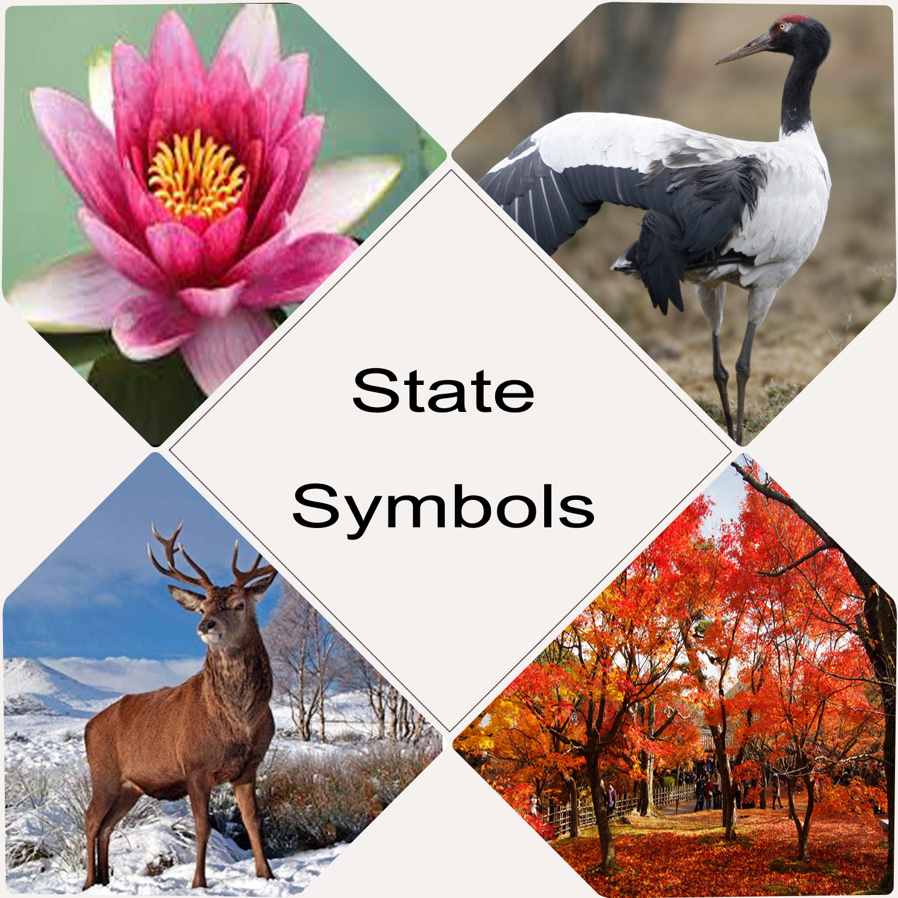

- See J&K in a New Light

Jammu and Kashmir is a state in northern India.
It is located mostly in the Himalayan mountains.
It shares a border with the states of Himachal Pradesh and Punjab to the south.
Jammu and Kashmir have an international border with China in the north and east.
The Line of Control separates it from the Pakistan-controlled territories of Azad Kashmir and
Gilgit-Baltistan in the west and northwest respectively.
The state has special autonomy under Article 370 of the Constitution of India.
Historical Facts about Jammu and Kashmir
- Kalhana, the first Indian history writer, gave a vivid account of the history of Kashmir before the 10th century AD.
- The greatest Muslim king of early medieval age in Kashmir was Zain-ul-Abidin, who ascended the throne in AD 1420 and ruled up to 1470.
- His long rule contributed extensively to the spread of art, culture, music, and every other sphere in the life of Kashmir people.
- He also created a strong army and annexed many regions nearby Kashmir. These were the time of golden rule in Kashmir when peace and harmony prevailed.
- After the death of King Zain-ul-Abidin, a period of destruction came calling to Kashmir and many raiders from outside looted the state and made the people and local rulers their captive.
- In 1587, Akbar annexed Kashmir into his vast empire.
- Jahangir, son of Akbar and next Mughal ruler, visited Kashmir 13 times and created two beautiful gardens on the bank of Dal Lake, namely, the Shalimar Bagh and Nishat Bagh.
- After two centuries of peace and development, Kashmir came into the hands of the Pathans in 1752, when the Afghan ruler Abdul Shah Abdali attacked this region on the request of local noblemen.
- In 1819, the Sikhs under Maharaja Ranjit Singh annexed this region, but their empire remained in place only for 27 years.
- A part of the erstwhile Princely State of Kashmir and Jammu, the region is the subject of a territorial conflict among China, India and Pakistan.
- The western districts of the former princely state known as Azad Kashmir and the northern territories known as Gilgit-Baltistan have been under Pakistani control since 1947.
- The Aksai Chin region in the east, bordering Tibet, has been under Chinese control since 1962.
Present Day Facts about Jammu and Kashmir
- Jammu and Kashmir consisting of three regions: Jammu(25.93%), the Kashmir Valley(15.73%) and Ladakh(58.33%). The Kashmir valley is famous for its beautiful mountainous landscape, and Jammu’s numerous shrines attract tens of thousands of Hindu pilgrims every year.
- Ladakh, also known as “Little Tibet”, is renowned for its remote mountain beauty and Buddhist culture.
- Jammu and Kashmir is home to several valleys such as the Kashmir Valley, Tawi Valley, Chenab Valley, Poonch Valley, Sind Valley and Lidder Valley. Because of Jammu and Kashmir’s wide range of elevations, its biogeography is diverse.
- The Jhelum River is the only major Himalayan river which flows through the Kashmir valley. The Indus, Tawi, Ravi and Chenab are the major rivers flowing through the state. Jammu and Kashmir is home to several Himalayan glaciers.
- In Jammu and Kashmir, the principal spoken languages are Kashmiri, Urdu, Dogri, Pahari, Balti, Ladakhi, Gojri, Shina and Pashto.
- However, Urdu written in the Persian script is the official language of the state.
- Kawa, traditional green tea with spices and almond, is consumed all through the day in the chilly winter climate of Kashmir.
State Symbols
| State animal | Kashmir stag |  |
| State bird | Black-necked crane(Hangul) | |
| State flower | Lotus | |
| State tree | Chinar |
- Baltal-Thajwas Wildlife Sanctuary
- Changthang Cold Desert Wildlife Sanctuary
- Gulmarg Wildlife Sanctuary
- Hirapora Wildlife Sanctuary
- Hokersar Wildlife Sanctuary
- Jasrota Wildlife Sanctuary
- Karakoram (Nubra Shyok) Wildlife Sanctuary
- Lachipora Wildlife Sanctuary
- Limber Wildlife Sanctuary
- Nandini Wildlife Sanctuary
- Overa Aru Wildlife Sanctuary
- Rajparian Wildlife Sanctuary
- Ramnagar Rakha Wildlife Sanctuary
- Surinsar Mansar Wildlife Sanctuary
- Trikuta Wildlife Sanctuary
Wildlife Sanctuaries
- Shankaracharya Temple
- Hazratbal Mosque
- Hari Parbat Fort & Temple of Sharika Devi
- Khanqah of Shah Hamadan
- Kheer Bhawani
- Chhatti Padshahi Gurudwara
- Jama Masjid
- Martand
- Awantiput